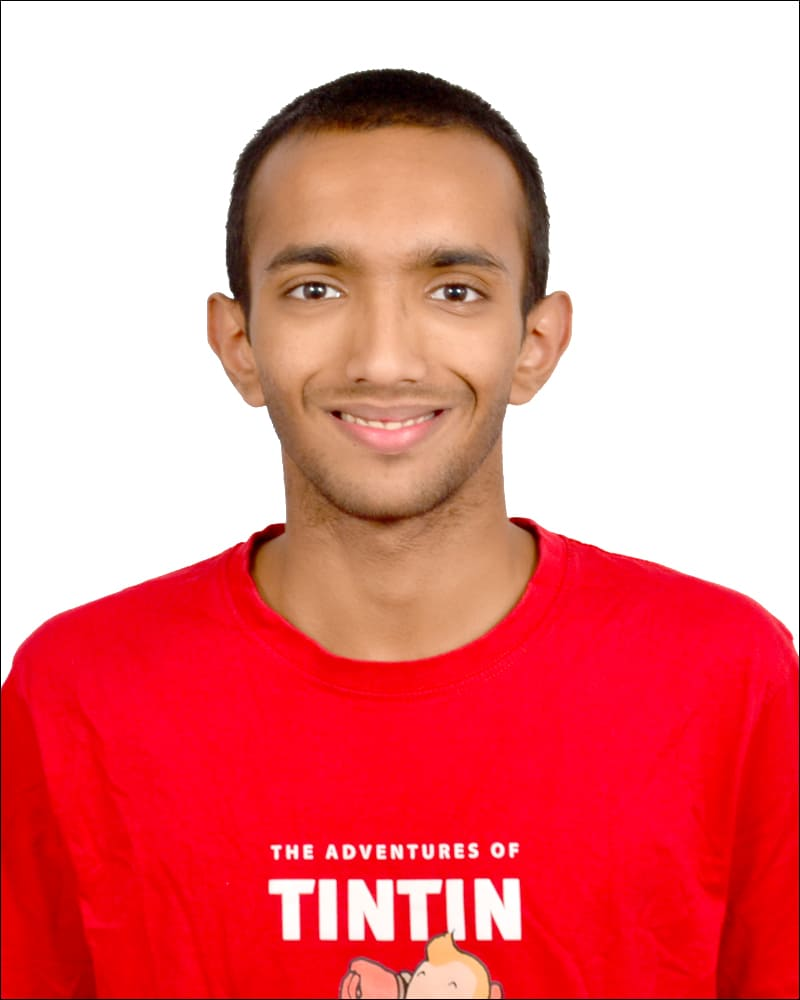

Mathematics • Computer Science • Exploring Real-World Problems
Sports, Books and Tabla have been my constant companions
from the very beginning.
A day without sports → a day wasted
To relax → to read a book
I'm not really sure why I play the Tabla 😊
A more recent major addition is Math. It keeps me engaged for long periods of time....... though I'm not 100% sure if headache counts as fun. I have an olympiad background and love to spend time thinking about puzzle style problems. Almost all of CP (competitive Programming ) is included in this, so I do like algorithm questions..... but I don't think I'm inclined towards the frantic pace of coding.
Wordle, Connections and a Guardian crossword have become a daily ritual